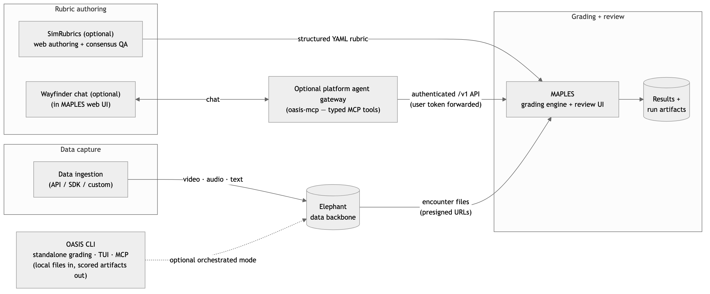
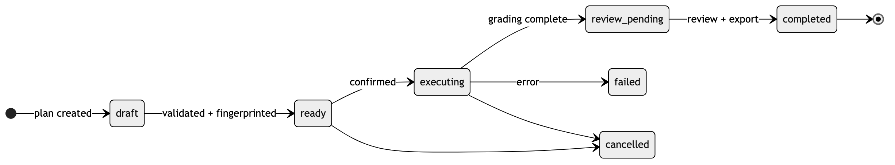
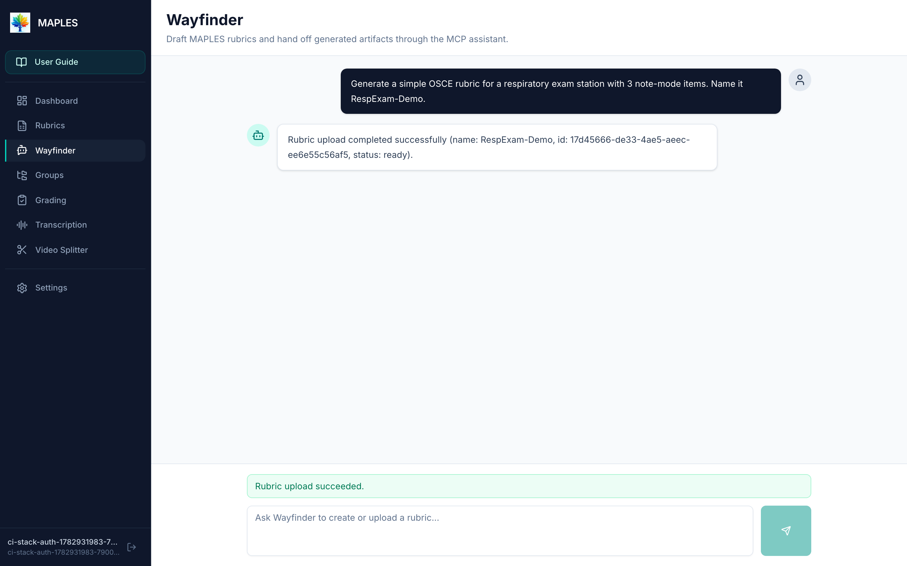
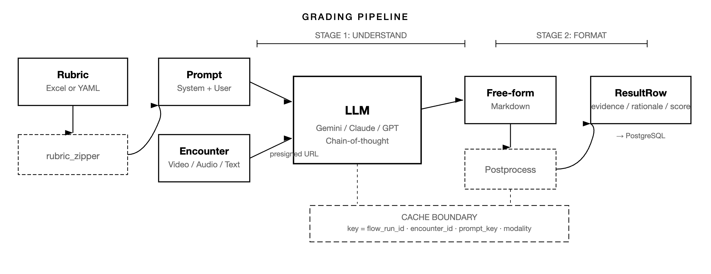

OASIS: A Rubric-Based Multimodal Assessment Platform Using Large Language Models
Technical Report
OASIS (Open Assessment and Scoring Infrastructure Stack) is a systems platform for rubric-based grading of video, audio, and text with large language models. Scoring one artifact with an LLM is straightforward; deploying assessment at scale requires encounter management, rubric versioning, modality-aware execution, provenance capture, and human review. OASIS pairs a standalone command-line interface with a canonical integrated Elephant + MAPLES stack for encounter management and multimodal grading orchestration. Both paths can target hosted APIs or institution-controlled open-weight models through Ollama and OpenAI-compatible endpoints such as vLLM. SimRubrics rubric authoring and the Wayfinder conversational agent gateway are optional extensions that use the same authenticated interfaces as human operators. Given a rubric and recorded encounters, OASIS produces per-criterion scores, evidence, and rationales, preserving execution artifacts for audit. Distinctive features include rubric-as-program compilation, progressive execution plans, content-addressable grading identity, transcript-augmented multimodal grading, explicit review state, and a shared command surface for humans and autonomous agents. Though developed in medical education, the architecture is domain-agnostic, applying wherever structured performance can be evaluated from recorded or written artifacts. In production at UT Southwestern Medical Center since Fall 2023, the platform has processed more than 7,000 encounters. This publication includes the report and project information, not application source, binaries, installation materials, sample data, or a tagged software release.
Summary
OASIS (Open Assessment and Scoring Infrastructure Stack) is a rubric-based grading platform for video, audio, and text with large language models. Its central claim is simple: a useful assessment system needs more than a model call. It needs data management, rubric versioning, modality-aware execution, provenance, and review. OASIS combines a standalone CLI with the canonical integrated Elephant + MAPLES stack for encounter management and multimodal grading orchestration. Both paths can target hosted APIs or institution-controlled open-weight models through Ollama and OpenAI-compatible endpoints such as vLLM. SimRubrics rubric authoring and the platform Wayfinder agent gateway are optional extensions. The same workflow is available through command-line, interactive terminal, and opt-in agent-facing interfaces. An umbrella workspace with canonical service submodules preserves component boundaries. The implementation emphasizes progressive execution, content-addressable deduplication, and agent-operable contracts rather than direct “fire the whole cohort at the model” execution.
This report describes the system architecture, the rubric-to-prompt compilation model, the multimodal grading pipeline, and the operational experience from deployment at UT Southwestern Medical Center.
Motivation
Structured performance assessments are everywhere — medical licensing exams, teacher practicums, language proficiency tests, simulation-based training. The workflow is repetitive and labor-intensive: an evaluator watches a recording or reads a written artifact, consults a rubric, and assigns scores. Cost grows linearly with the number of encounters, while reliability remains imperfect; human inter-rater reliability on performance assessments is itself often modest (Downing 2004).
Throughout this report, an encounter is any performance artifact that can be evaluated against a rubric. The term comes from medical education, but the abstraction is broader: interviews, simulations, classroom observations, drills, inspections, or structured written responses. The core vocabulary is small:
| Term | Meaning |
|---|---|
| Encounter | One evaluable performance artifact (or set of artifacts): a recording, a written response, or both |
| Rubric / item | The evaluator-authored specification; each item is one scorable criterion with leveled descriptors |
| Station | One distinct scoring context within an assessment (an exam room, a scenario, an inspection setting) |
| Modality | The input type an item is scored from: video, audio, or text |
| Group | A named collection of encounters selected for grading together |
| Run | One execution of a rubric against a group (or local file set), with its own provenance record |
| Review state | The per-item human adjudication status: pending, accepted, or reviewed (overridden by a human) |
| Execution plan | The inspectable staged artifact (plan, then sample, then scale) that gates cost and structural validity |
Recent LLM work has shown that models can score notes, transcripts, and videos with useful agreement with human raters (Jamieson et al. 2024; Shakur et al. 2024; Holcomb, Kang, and Shakur 2024). But a single successful model call is not yet a deployable assessment system. Real use requires infrastructure to manage encounter data, preserve rubric and model state, route media to modality-appropriate grading paths, capture execution artifacts, and support human review before results are treated as final.
OASIS addresses this systems problem. It is designed for academic deployment so that institutions can evaluate rubric-based AI assessment without depending on a proprietary end-to-end vendor, while preserving the operational properties that matter in practice: traceability, repeatability, and reviewability. The design thesis throughout is that LLM assessment becomes trustworthy when it becomes inspectable software: rubrics compile to typed programs, every grade has a stable content-addressed identity, and human review is a recorded state transition rather than a spreadsheet ritual. Later sections make this concrete by following a single rubric item — organization, from the starter pack’s Documentation Quality rubric — from spreadsheet row to compiled prompt, typed result, cache identity, review decision, and replay bundle.
The intended standalone evaluation profile is designed around a single Go binary and one provider credential. The evaluated command sequence moves from environment checks to a no-spend plan and then a one-item sample before any larger run. No binary or installable source is included in this public publication. An internal synthetic starter pack was used for first-run validation; it is not included here. The integrated stack and agent surfaces build on the same workflow, so a local validation can carry into larger deployments when the software is available under separately stated terms.
Contributions
This technical report makes five contributions:
- An end-to-end assessment architecture with contract-enforced component boundaries, spanning standalone CLI use, institutional deployment, and agent-facing operation — packaged as an umbrella workspace with canonical service submodules.
- A rubric-as-program compilation strategy that compiles spreadsheet rubrics into modality-aware prompts and typed result schemas.
- A staged multimodal execution model that pairs progressive, cost-visible execution plans and transcript-augmented media grading with content-addressable grading identity, enabling cache reuse, cross-model comparison, and distributed batch execution.
- An agent-native command surface in which CLI, terminal UI, and Model Context Protocol (MCP) tools share one command-service layer, complemented at the institutional tier by a platform agent gateway that exposes the grading workflow as typed MCP tools and embeds a skills-driven Wayfinder assistant in the web interface.
- A provider-neutral experimentation surface in which hosted APIs, Ollama, and OpenAI-compatible endpoints such as vLLM can execute against the same rubric snapshots, content-addressed inputs, review workflow, and model-identified result records.
Operational experience — more than 7,000 production encounters since Fall 2023, with human review and provenance capture throughout — serves as the supporting evidence for these design choices rather than as a separate contribution.
Evolution and Design Philosophy
OASIS evolved through four overlapping stages: a grading pipeline, a reusable platform, an agent-native operating surface, and an accessible tool for non-specialist users. The original MAPLES pipeline established that LLMs could apply rubrics to clinical performance artifacts at operational scale. The platform layer added Elephant for encounter and file management, SimRubrics for rubric quality assurance, and shared contracts across services. The agent-native layer then exposed the same workflow through the CLI, the interactive terminal UI (TUI), and MCP surfaces (Anthropic 2024), so autonomous assistants could plan, inspect, and recover grading runs without bypassing the human-facing system. A platform agent gateway and an embedded Wayfinder chat assistant later brought the same property to the institutional web interface. (Wayfinder is the platform’s assistant persona; it has two implementations — an agent embedded in the CLI and TUI, and a gateway-backed chat in the MAPLES web application — and this report qualifies each use as CLI-tier or platform-tier.) The fourth layer is accessibility: a standalone binary, guided workflow, reproducibility bundle, and synthetic starter pack let researchers evaluate the system without deploying institutional infrastructure.
Software Design
Distinctive System Features
OASIS’s distinguishing contribution is not a single model prompt or one service boundary. It is the combination of assessment-specific contracts, staged execution, and reviewable evidence that turns LLM scoring into an inspectable software system.
- Rubric-as-program compilation. Spreadsheet criteria become modality-aware prompt batches and typed result schemas rather than informal prompt text.
- Perception-before-assessment. Text extraction, transcript generation, and media routing are treated as explicit artifacts before the LLM assigns a score.
- Progressive execution plans. Users and agents can validate data, estimate cost, sample, and resume before scaling to a full cohort.
- Content-addressable grading identity. Grading units are keyed by rubric, input, prompt, and model identity, enabling cache reuse, model comparison, and distributed batch work.
- Human review as workflow state. Machine scores remain provisional until accepted or overridden, and review evidence links back into the run record.
- Agent-native operation. CLI, TUI, and MCP tools share the same command-service layer, so agents operate the same workflow as humans rather than a separate wrapper; at the institutional tier, a platform agent gateway and embedded Wayfinder chat extend the same property to the web application.
- Provenance and replay bundles. Each run preserves rubric snapshots, prompts, provider/model metadata, outputs, evidence indexes, and replay instructions.
- Hosted and open-weight model paths. Ollama and OpenAI-compatible endpoints such as vLLM let institution-controlled models participate in the same grading, comparison, review, and provenance workflow as hosted APIs.
- Deployment gradient. The same rubric and artifact model supports local standalone grading, the integrated Elephant + MAPLES stack, and optional agent-driven orchestration; shared hosting is a separate site-owned adapter.
Architecture
OASIS combines a standalone CLI with the integrated Elephant + MAPLES stack, all organized around a shared rubric and artifact model. SimRubrics and the platform agent gateway are optional extensions (Figure 1).

The standalone CLI reuses the same rubric logic and grading concepts against local files, but does not require Elephant, MAPLES, or SimRubrics to be running. Across all five components, code-generated contracts (OpenAPI specifications, sqlc queries, and Pydantic schemas) bind services at compile time rather than at runtime.
SimRubrics (Flask, PostgreSQL, Vertex AI). A web application for AI-assisted rubric quality analysis. Evaluators upload rubrics in Excel or CSV format; the system analyzes each criterion for clarity and measurability using multiple LLM providers and exports a structured YAML file that MAPLES consumes directly. SimRubrics is optional — users can also provide rubrics to MAPLES as Excel files without it (see The Rubric-to-Prompt Transformation).
Elephant (Go, PostgreSQL, MinIO). A REST API for managing encounter data. It stores metadata (who, what, when, where) in PostgreSQL and files (video, audio, text) in S3-compatible object storage. The API is generated from an OpenAPI 3.0 specification; the Python SDK is generated from the same spec. Files are never proxied — clients get presigned URLs and upload/download directly from object storage. Deduplication and key design are detailed in the Elephant section below.
MAPLES (Multimodal Assessment Pipeline for Learning Encounter Scoring; FastAPI, Prefect 3, PostgreSQL, MinIO). The grading engine. Users select encounters from Elephant, pair them with a rubric, and submit a pipeline run. Prefect orchestrates parallel grading: each encounter is processed concurrently, and within each encounter, video, audio, and text items can be graded in parallel. Video grading uses Gemini’s native multimodal API. Audio is graded natively by capable providers or routed transcript-first — transcribed once, then graded as text. Text follows the same rubric-driven prompt pathway over textual inputs. Results are stored per criterion with the LLM’s rationale, and a review interface lets evaluators inspect, override, and export results. MAPLES’s three core technical contributions — the rubric-to-prompt compiler, the default two-stage grading path, and the flow-scoped caching strategy — are detailed below.
OASIS CLI (Go). A single binary providing command-line access to the grading workflow without requiring server infrastructure. In standalone mode, the CLI reads rubrics and encounter files from the local filesystem, calls the LLM API directly, and writes scored results (CSV, Markdown, and a reproducibility bundle with provenance chain) to an output directory. This eliminates Docker, PostgreSQL, and MinIO dependencies for individual researchers or evaluators trying the platform for the first time. The CLI supports Gemini, OpenAI, Anthropic, Ollama, and OpenAI-compatible endpoints. It also provides an interactive terminal UI, multi-model comparison, rubric conversion and editing utilities, a content-addressable cache that avoids redundant LLM calls across reruns, and a progressive pipeline that separates planning from sampling and full execution. An MCP server exposes a generated tool catalog over JSON-RPC, enabling integration with AI assistants and autonomous agents.
OASIS MCP Gateway (optional) (Python, FastMCP; the platform agent gateway hereafter). This opt-in counterpart to the CLI’s agent surface exposes the MAPLES REST workflow — authentication, rubrics, groups, station mappings, pipelines, results, review, transcription, and video splitting — as a catalog of typed MCP tools, and hosts the chat loop behind the platform-tier Wayfinder assistant embedded in the MAPLES web interface. Authentication remains with MAPLES, which forwards the signed-in user’s token; the trust boundary and the skills-driven rubric-authoring workflow are detailed in the Agent-Native Command Surface section.
Repository Topology and Planned Distribution
The public JamiesonLabUTSW/oasis repository currently carries project information and this technical report only. The working implementation remains private. A later software release may add the standalone OASIS CLI (oasis-go/), the platform agent gateway (oasis-mcp/), sample data, integration harnesses, and canonical service references, but that future publication will identify its exact contents, version, and terms. The intended topology is deliberately not a monolithic code dump: Elephant, MAPLES, SimRubrics, and the MAPLES Toolkit retain independent component boundaries while an application workspace records an integrated snapshot.
This topology encodes architectural boundaries in the repository itself. Elephant owns contract-first encounter management; MAPLES owns runtime orchestration and review; SimRubrics owns upstream rubric refinement; the Toolkit owns agent skill definitions; the CLI owns the low-friction entry path plus terminal and agent surfaces; and the gateway owns platform-tier agent access. Shared behavior crosses those boundaries only through explicit contracts: OpenAPI in the Elephant path, typed rubric schemas in the grading path, and versioned run artifacts at execution time.
The separation also improves engineering velocity. Component teams can evolve their service without turning the umbrella workspace into a large coupled monolith, while the application repository can add end-to-end tests, scenario packs, and release gates that exercise the integrated stack as users actually experience it.
Design Decisions
The system is organized around seven design decisions.
- Rubric-driven. The evaluator controls what is scored and how. The rubric is the specification; the LLM is the executor.
- Domain-agnostic. Nothing in the rubric format or grading pipeline is specific to medicine, education, or any other field. If an assessment produces video, audio, or text and can be described by a rubric, OASIS can process it. Production evidence to date comes from medical education; an internal synthetic validation corpus includes a non-medical example to keep the abstraction concrete.
- Perception before assessment. The architecture separates deterministic perception — text extraction, audio transcription, video frame processing — from stochastic assessment by the LLM. Perception artifacts are cached, validated, and reused across models. The principle is that a model should never score what it cannot perceive; evidence must be grounded in what was actually extracted from the input, not inferred.
- Provider-aware, not provider-locked. The CLI supports Gemini, OpenAI, Anthropic, Ollama, and OpenAI-compatible endpoints. MAPLES supports Gemini, OpenAI, Azure OpenAI, and OpenAI-compatible endpoints — including locally hosted open-weight servers — with per-user bring-your-own-key credentials; SimRubrics exposes hosted providers where multimodal support or hosted integrations matter. The overall architecture avoids coupling the workflow to a single vendor.
- Cost-visible. Planning and sampling are first-class stages. Users can estimate cost, grade a small subset, and only then scale to a full cohort.
- Auditable and replayable. OASIS snapshots rubrics, records provider and model identifiers, persists prompts and outputs, and captures review actions so that prior runs can be inspected and replayed within the limits of external model versioning.
- Incremental and human-reviewed. Users can start with the standalone CLI, then add Elephant, MAPLES, and SimRubrics as their operational needs grow. AI outputs are not considered final until they pass through a human review workflow.
Hosted and Open-Weight Inference
OASIS treats the model endpoint as an explicit execution choice rather than a fixed platform dependency. The standalone CLI supports Gemini, OpenAI, Anthropic, Ollama, and OpenAI-compatible endpoints. MAPLES supports Gemini, OpenAI, Azure OpenAI, and OpenAI-compatible endpoints, including models served on institution-controlled infrastructure with vLLM. This lets a model comparison change the provider, endpoint, or model while retaining the same rubric snapshot, encounter selection, review states, and result structure.
Recent internal engineering runs have exercised local vLLM endpoints with Gemma and Qwen model families across four distinct presentation paths:
| Path | Demonstrated scope | Interpretation boundary |
|---|---|---|
| Text | Direct local grading with multiple open-weight primaries | The strongest and most directly comparable local path |
| Transcript-first audio | Local ASR followed by open-weight text grading | A pipeline evaluation, not native waveform understanding |
| Frame-presented video | Extracted frames supplied to open-weight vision-language models | Not equivalent to native continuous-video input |
| Native audio | Research runs with selected open-weight multimodal models | Model- and runtime-specific rather than a general provider guarantee |
These runs demonstrate that open-weight inference is an operating mode of the system, not merely an untested adapter. They are engineering evaluations rather than universal performance benchmarks: the effective capability depends on the model, serving runtime, context limits, media processor, generation settings, and exact presentation supplied to the model. OASIS therefore records the provider and model with each result and keeps presentation differences explicit when comparing outputs.
A local primary does not by itself make a workflow fully local. Every active stage—including transcription, primary grading, and any schema-conversion or post-processing model—must run on institution-controlled infrastructure for the complete workflow to have that property. For example, an evaluated MAPLES configuration that uses a local vLLM primary and a hosted schema converter is a hybrid configuration and must be described as such.
Standalone, Interactive, and Agent-Native Operation
OASIS extends the institutional stack with a standalone execution layer intended to reduce adoption friction. A user can point the CLI at a local directory of files and a rubric, inspect a cost estimate, grade a small sample, and then scale to a full run without bringing up databases or containerized services. This progressive workflow is technically important because it narrows failure radius: rubric problems, provider misconfiguration, or unsupported modalities can be discovered before a full cohort run.
The guided entry point, oasis run --interactive, recasts the same pipeline as a stepwise workflow: environment check, model selection, smart scan, data review, rubric validation, plan, sample, grade, and review. The --smart-scan path uses an LLM to classify messy input directories, infer encounter boundaries, and surface ambiguous file groupings before grading begins. The CLI-tier Wayfinder agent applies canonical workflow recipes with infrastructure fallback gates; the recipes themselves are detailed under Agent-Native Command Surface.
| Capability | Why it matters |
|---|---|
| Standalone CLI execution | Eliminates infrastructure requirements for initial evaluation and small-scale grading |
| Interactive terminal UI | Gives users a local surface for browsing runs, inspecting artifacts, and reviewing outputs |
| MCP tool surface | Makes the same workflow operable by AI assistants and autonomous agents |
| Shared command-service layer | Keeps CLI, TUI, and MCP behavior aligned instead of maintaining separate implementations |
| Content-addressable cache | Avoids repeated LLM calls for unchanged inputs and rubrics |
| Audit and provenance capture | Preserves prompts, routing, outputs, and review state for later inspection |
| Distributed batch commands | Allows grading work to be split across multiple machines |
review-session loop |
Turns completed runs into explicit rubric-improvement and re-grade feedback cycles |
| Transcript-first audio workflow | Lets audio inputs participate in lower-cost text-capable grading paths after transcription |
The same core command service is exposed through three surfaces: conventional CLI commands, an interactive full-screen terminal UI, and an MCP server for agent operation. This parity is deliberate; its architectural consequences are unpacked in the Agent-Native Command Surface section.
These capabilities make the standalone path more than a thin wrapper around provider APIs. Two are developed further below — distributed batch, which follows a create/work/merge pattern across machines, and segment-focused grading of longer media, which reduces cost and sharpens focus before synthesis. Because these behaviors live in the shared command-service layer, they reach human operators and agent workflows at the same time.
Progressive Execution and Execution Plans
OASIS treats grading as a staged operation rather than as a single irreversible action. In the current CLI architecture, workflows move through five checkpoints: initialize, setup, dry-run, single, and scale. In user-facing terms this appears as doctor followed by plan generation, a sample run, and only then full grading or distributed batch execution.
| Stage | Purpose | Typical OASIS surface |
|---|---|---|
| Initialize | Verify provider credentials, environment, and service reachability | oasis doctor |
| Setup | Scan input data, parse rubric, validate mappings and modalities | oasis auto-grade plan mode |
| Dry-run | Compose prompts, estimate work, and surface warnings before spend | plan output / execution plan |
| Single | Grade one or a few encounters and inspect quality | --sample N |
| Scale | Run the full cohort locally, orchestrated, or via distributed batch | --standalone, --execute, batch * |
This design makes cost and structural validity visible before expensive calls. A malformed rubric, a missing provider key, or an unsupported modality can therefore stop the workflow at plan time or sample time instead of after a full cohort has already consumed tokens.
The progressive pipeline is itself externalized as an artifact. OASIS writes execution-plan.v2 documents as Markdown plus YAML frontmatter, with immutable step IDs, fingerprinted inputs, waiver metadata, and an explicit lifecycle (Figure 2). For a full grading workflow, the canonical step graph is doctor, validate, manifest, rubric, mapping, context, storage, plan, confirm, sample, grade, verify, review, and export. This is more than user-interface scaffolding. It gives humans and agents an execution state they can inspect, annotate, resume, fork, verify, or abandon explicitly.

draft, become ready once inputs are validated and fingerprinted, and move through executing to review_pending when grading completes; review and export transition the plan to completed. Errors mark the plan failed, and operators can cancel active plans.
Agent-Native Command Surface
The MCP surface is not generated by wrapping a separate REST API or by shelling out to CLI subprocesses. Instead, the CLI, interactive terminal UI, and MCP server all share the same internal CommandService execution layer. They therefore inherit the same command dispatch, envelope format, compound operations, and error semantics.
The generated MCP reference exposes the OASIS command surface over JSON-RPC. Beyond argument schemas, each tool carries planning metadata: x_oasis_mutating, x_oasis_category, x_oasis_prerequisites, x_oasis_follow_up, and x_oasis_typical_duration. These annotations are operationally important because grading workflows mix read-only discovery with irreversible actions such as uploading files, triggering pipelines, or mutating plans.
The tool catalog spans discovery, stack management, Elephant operations, data handling, rubric operations, grouping, pipeline execution, provenance, review, batch, summary, workflow, and plan-management families. It also includes compound tools such as stack.check, pipeline.grade_and_wait, and batch.execute, plus discovery helpers such as catalog.search and catalog.describe. Together, these features make the MCP surface agent-native rather than merely agent-accessible: the tools are shaped for planning and recovery, not just for remote invocation.
The shared command-service architecture also reduces drift. A capability added for human CLI use can become available to the interactive UI and the MCP server without maintaining a second behavior implementation. For a platform meant to support both expert users and autonomous assistants, that parity is itself an architectural property.
Model tier separation. OASIS distinguishes between models suited for orchestration (tool use, workflow reasoning, multi-step planning) and models suited for grading (media perception, rubric-faithful scoring). The unified model catalog tags each model with capability flags — OrchestratorCapable for models that reliably follow multi-tool workflows, MediaGradeCapable for models that accept native audio or video input. This prevents a common failure mode in agent-driven assessment: using a model that is excellent at text grading but unreliable at multi-step tool orchestration, or vice versa. The system is opinionated about defaults but not restrictive; users without a preferred orchestration provider receive an informational warning rather than a hard block.
Canonical workflow recipes. The CLI-tier Wayfinder includes a catalog of canonical workflow recipes covering first-time standalone grading, orchestrated institutional runs, rubric creation and iteration, run diagnosis, audio/video workflows, and messy-data triage, among others. Each recipe specifies a tool sequence with fallback gates: if Docker or Elephant is unavailable, the agent falls back to the standalone path rather than failing, so agent-driven operation degrades gracefully instead of blocking on infrastructure prerequisites.
Platform-tier agent gateway. The institutional stack carries a second, distinct MCP server. Where the CLI-tier server wraps the shared command-service layer, the platform agent gateway proxies the MAPLES REST API, so web-session agents operate under MAPLES’s own authentication and authorization rather than a parallel permission model. The trust boundary is deliberate. The gateway itself is unauthenticated and network-isolated (loopback-bound by default); MAPLES enforces authentication at its own /v1/wayfinder/chat endpoint and forwards the signed-in user’s token. Agent actions therefore carry exactly the identity and permissions of the human who asked. For rubric authoring, the gateway orchestrates versioned skills from the MAPLES Toolkit submodule (for example, generate-rubric-zeroshot and its audio, video, and multimodal variants). An evaluator describes the rubric in natural language; the platform-tier Wayfinder drafts it against the platform’s rubric schema and uploads it through the authenticated upload_rubric tool, where it lands as an ordinary versioned rubric (Figure 3). The exchange in the figure is enforced, not merely requested: if the model loads a generation skill and ends its turn without actually calling upload_rubric, the gateway forces the tool call, and the reply shown to the user is a deterministic receipt built from the real API response — rubric name, id, and status — rather than model prose. The two servers are complementary by construction: one gives agents the operator’s workflow, the other gives agents the institution’s workflow, and both keep human review state authoritative.

SimRubrics: Multi-Model Rubric Quality Assurance
The grading pipeline begins before any encounter is processed. The quality of LLM-based scoring is bounded by the quality of the rubric itself. A vague criterion such as “communicates effectively” produces unstable judgments regardless of model quality. SimRubrics addresses this upstream problem by treating rubric authoring as its own technical workflow rather than as informal prompt writing.
In the standard workflow, a configured LLM provider analyzes each rubric section. Prompts are template-based: one step extracts the criterion structure from the uploaded spreadsheet, and another normalizes it into the OASIS schema with fields such as Technique, Purpose, and AdditionalContext. The result is not a final score but a cleaner rubric specification for downstream execution.
For higher-stakes rubric development, SimRubrics offers a multi-model consensus workflow. In Round 1, three frontier models — Gemini, Claude, and Grok — analyze the same rubric item independently. (SimRubrics’ consensus panel is configured separately from the grading pipeline’s providers.) In Round 2, each model critiques the others’ analyses. In Round 3, a synthesis step consolidates the critiques into a single recommendation describing what to change, why to change it, and what tradeoffs the change introduces.
The evaluator remains in control throughout. They can accept suggested changes, modify them, or provide a clarifying directive that triggers another analysis cycle. Every accepted revision produces an immutable RubricVersion with JSON and YAML snapshots, so the rubric’s evolution is captured as part of the system record rather than disappearing into ad hoc spreadsheet edits.
SimRubrics also includes a built-in test-grading feature: evaluators can upload a sample encounter and grade it against the current rubric version without invoking the full MAPLES pipeline. This creates a fast loop for finding brittle criteria before institutional-scale execution.
The export format is a structured YAML file that mirrors the MAPLES Rubric Pydantic model:
name: "Fall Assessment — Communication Skills"
stations:
Observation:
name: "Direct Observation"
prompts:
Audio:
- key: "active_listening"
system: ["..."]
user: ["..."]
response_config:
structured: trueSimRubrics is optional. For rapid prototyping, users can bypass it and provide MAPLES with an Excel rubric directly. A third authoring path is conversational: the platform’s embedded Wayfinder assistant can draft a rubric from a natural-language description using versioned authoring skills and upload it through the same authenticated API, after which it is reviewable and replaceable like any other rubric. Whether the rubric arrives as curated YAML from SimRubrics, as a spreadsheet to be compiled on upload, or as an agent-drafted artifact, MAPLES ultimately receives the same normalized rubric representation. The next sections follow that representation through execution: ingestion, compilation, scoring, review, and audit.
MAPLES: Pipeline Lifecycle
MAPLES is the execution layer that turns a rubric and a collection of encounters into scored outputs. The six stages below define the outer lifecycle of a run; the sections that follow unpack the inner mechanics of the middle stages, where rubric logic becomes prompts, prompts become typed results, and typed results become reviewed records.
- Group creation. The user selects encounters from Elephant’s catalog — by case, activity, cohort, or date range — and saves the selection as a named group. The resulting manifest is stored in object storage.
- Rubric ingestion. MAPLES accepts either an Excel rubric or a pre-compiled YAML rubric. In the Excel path,
rubric_zipper(the rubric compiler, detailed under The Rubric-to-Prompt Transformation) validates the workbook, compiles it into a typedRubricobject, and stores the compiled representation. - Pipeline submission. Validation runs before any LLM calls: rubric completeness, provider capabilities against requested modalities, and encounter file availability. A run that cannot succeed is rejected before tokens are spent.
- Per-encounter processing. A Prefect flow dispatches one task per encounter. Encounters run concurrently up to worker capacity. Within each encounter, video, audio, and text grading paths run in parallel.
- Result persistence. Each scored item is written as a
ResultRowin PostgreSQL, while aggregated result artifacts and rubric snapshots are written to object storage so that the run remains inspectable after completion. - Human review. Evaluators inspect, accept, override, and export results in the review interface.
Provider capabilities determine which modality paths a run can use:
| Provider path | Native video grading | Native audio grading | Transcript/text grading |
|---|---|---|---|
| Google Gemini | Yes | Yes | Yes |
| OpenAI, Azure OpenAI, or OpenAI-compatible | No | Yes | Yes |
Audio can also route transcript-first — transcribed once, then graded as text — which lets text-only endpoints participate in audio-derived grading. This capability check is part of the broader execution model: OASIS attempts to fail early and explicitly when a requested workflow is structurally invalid. Once a run passes validation, the central technical step is compilation: the uploaded rubric must be transformed into prompt batches and typed result schemas before any encounter can be graded.
The Rubric-to-Prompt Transformation
The central abstraction connecting rubric authoring and execution is that a rubric is treated as a program. The evaluator writes the specification in a spreadsheet; rubric_zipper compiles that specification into prompts and result schemas that drive the grading pipeline. This compilation step is the contract between rubric design and runtime behavior.
Input format. Each rubric is an Excel workbook. A _metadata sheet stores the rubric name, description, version, and assessment context as key-value pairs. An optional _mapping sheet maps activity/case combinations to station sheets. A station is one scoring context within the assessment — for example, one room in an Objective Structured Clinical Examination (OSCE). Each station sheet contains one row per scorable item with the following columns:
| Column | Purpose |
|---|---|
ItemKey |
Unique identifier (e.g., organization) |
Mode |
Modality: Audio, Video, or Note (Note is the rubric format’s name for the text modality) |
Section |
Logical grouping within a station |
QuestionText |
What to assess — the criterion definition |
Response1–Response6 |
Scoring descriptors per level; descriptor N corresponds to score N−1 (e.g., 0–5) |
AdditionalContext |
Optional supplemental grading instructions |
Technique, Purpose |
Optional fields for video-based assessment |
The standalone rubric engine also supports a V2 YAML format generated by oasis rubric init. V2 rubrics keep item data separate from prompt text: item keys, scoring levels, modality, and optional context are stored as structured fields, and the engine composes prompts at runtime. This allows OASIS to layer domain, program, station, and evidence context consistently while preserving expert overrides for items that require hand-authored instructions. V2 rubrics are also optimized for cost and latency through item batching: ordinary items with compatible modality and time hints can be grouped into a single prompt, while items with custom system prompts, user prompts, or response schemas bypass batching to preserve explicit author intent. Because compatible items share prompts, item-heavy rubrics see roughly an order-of-magnitude reduction in LLM calls — a direct consequence of batch size rather than a benchmark claim — without changing the scoring contract.
Compilation. rubric_zipper reads the workbook, validates its structure, groups items by modality and section, and generates prompt batches. Items within a batch are formatted in a ####-delimited block:
####
organization: Is the document organized in a logical, readable
structure with clear sections or headings? Can a reader quickly
find specific information?
SCORING RUBRIC:
0: No discernible structure; information is scattered or
presented as stream-of-consciousness
1: Some structure is present but inconsistent; key information
is difficult to locate
2: Well-organized with clear sections, logical flow, and easy
to scan for specific details.Multiple items are concatenated into a single prompt. The system typically batches 8–20 items per prompt to balance API cost against response complexity.
Response schema generation. For each prompt, rubric_zipper dynamically creates a Pydantic model using create_model(). Each item key becomes a field whose type is the modality-specific response model — NoteResponseItem, AudioResponseItem, or VideoResponseItem. The resulting schema defines the shape of stored results and is reused by postprocessing, validation, and provider-native structured-output paths when available. In this way, the rubric controls both the question being asked and the structure of the answer the system expects to persist. The worked example below follows one rubric row through that contract.
Worked Example: From Spreadsheet Row to Reviewed Result
The compilation contract is easiest to see by following one rubric item end to end. Consider the organization item from the Documentation Quality rubric in the internal synthetic validation corpus. This item assesses whether a written document is structured logically, which makes it applicable to incident reports, inspection summaries, post-encounter notes, or any other structured written artifact.
1. Rubric row (Excel). ItemKey: organization, Mode: Note, Section: Documentation, QuestionText: “Is the document organized in a logical, readable structure with clear sections or headings? Can a reader quickly find specific information?”, Response1: “No discernible structure; information is scattered or presented as stream-of-consciousness”, Response2: “Some structure is present but inconsistent; key information is difficult to locate”, Response3: “Well-organized with clear sections, logical flow, and easy to scan for specific details.”
2. Generated prompt (Stage 1 input; see Two-Stage Grading below). The system message is: “You are an expert evaluator assessing the quality of a written post-encounter document. Evaluate based only on the text provided.” The user message contains the ####-delimited item block shown above, followed by instructions to extract evidence from the document, provide a rationale, and assign a score using the rubric levels.
3. Parsed response (Stage 2 output). In the default two-stage path, the LLM first returns a free-form response. OASIS then parses that response into a typed object:
{
"organization": {
"evidence": "The document uses four labeled headings (Background,
Findings, Analysis, Recommendations). Each section contains
2-3 focused paragraphs. No information appears outside its
logical section.",
"rationale": "Clear hierarchical structure with labeled sections.
A reader can locate any category of information without
scanning the full document.",
"score": 2
}
}4. Stored provisional result. The evidence, rationale, and score are persisted as a ResultRow in PostgreSQL, linked to the encounter, pipeline run, and rubric version. The result is immediately inspectable, but it is still provisional: an evaluator can later inspect it in the review interface, accept it, override it, and export the final dataset.
This single-item walkthrough scales to the full pipeline. The same contract is applied to prompt batches rather than one row at a time, and the same typed result then moves into caching, human review, and the audit record.
Two-Stage Grading

The worked example above follows one criterion, but the production path separates semantic judgment from structural normalization (Figure 4). In the default MAPLES path, Stage 1 (understand) sends the encounter media (video frames, audio file, or text) and the rubric prompt to the LLM and receives a free-form narrative response. Stage 2 (format) then parses that response into the typed schema (evidence, rationale, score per item). Some standalone paths can use provider-native structured output, but the institutional reference path keeps reasoning and formatting separate.
This separation has three advantages. First, in our experience, free-form responses produce more detailed reasoning than responses constrained to a JSON schema during the initial media-analysis step. Second, if parsing fails, Stage 2 can retry from the recorded Stage 1 output without repeating the expensive media analysis. Third, each stage is independently cached.
Cache keys are scoped to the pipeline run: {flow_run_id}-{encounter_id}-{prompt_key}-{modality}. Including the Prefect flow_run_id ensures that retrying a failed pipeline reuses cached LLM responses from the same run without cross-contaminating results between runs. The postprocess cache adds a hash of the input text, so re-parsing only triggers when the raw response changes.
Multimodal Depth: Transcript-Augmented Audio and Segment Decomposition
The perception-before-assessment principle (Design Decision 3) has concrete cost and quality consequences for each modality. For text inputs (.docx, .pdf, .rtf, or plain text), extraction is automatic and deterministic. For audio and video, OASIS extracts timestamped transcripts via Gemini Flash and caches them by file hash. Subsequent grading — by the same model, a different model, or on a different machine — reuses the cached perception artifact instead of repeating the expensive media call. Audio prompts can then be graded from transcript text by any text-capable provider, while video prompts can combine native multimodal perception with transcript context. This widens provider choice for audio-oriented assessments without discarding the original media.
The rubric format also supports focused media access. Prompts can carry a time_hint indicating that only a particular encounter phase should influence scoring. For narrowly targeted items, windowed transcript grading cuts token cost by well over an order of magnitude relative to full-recording context (internal estimates: roughly 1/45th). This matters in practice because many performance rubrics assess phase-specific behaviors rather than the entire encounter uniformly.
For longer recordings, OASIS supports a deeper execution mode (--depth deep) that automatically infers likely time windows for each rubric item from transcript content. The engine writes a segment plan explaining why each interval was selected, grades those segments independently, and then performs a synthesis step that cross-references evidence across segments. In one internal validation, a 15-minute encounter graded in this mode used roughly 1/40th the tokens of full-context grading. More importantly, segment decomposition reduces irrelevant context and makes evidence traces sharper for long multimodal runs.
Content-Addressable Cache and Distributed Batch
The standalone grading cache is content-addressable rather than purely execution-addressable. Its goal is to identify the logical grading unit independent of any single run identifier, while still distinguishing exact model-specific outputs. The current design uses two keys:
input_key = sha256(rubric_hash + media_hash + prompt_key [+ time_hint])
output_key = sha256(input_key + model + provider)The input_key answers the question “what are we grading?” and is model-agnostic. The output_key answers the question “what result did this provider/model produce for that input?” This separation enables several useful behaviors at once: deduplication for unchanged inputs, exact cache hits for reruns with the same model, side-by-side comparison across models for the same content, and portable provenance records that still make sense outside a particular server run ID. When the input has been graded by a different model than the one currently requested, the cache reports the partial hit, enabling the orchestrator to decide whether to reuse the existing result or re-grade with the requested provider.
To continue the worked example: the organization item’s input_key hashes the Documentation Quality rubric snapshot, the note’s bytes, and the prompt key organization. Grading the same note with a second model leaves that input_key untouched and adds a second output_key, so the two models’ scores are directly comparable as readings of the same input — and a rerun with the original model is a cache hit, not a second API call.
The same identity layer supports distributed batch execution. batch create builds a manifest with one work unit per (encounter, prompt) pair, carrying content hashes and rubric identity. batch work allows multiple agents or machines to process the same manifest concurrently while consulting the shared cache before each unit. If another machine has already completed that exact (rubric, file, prompt, model) combination, the work is skipped immediately rather than recomputed. batch merge then combines agent outputs into a unified result set. In effect, the cache is not just a local optimization; it is also the coordination substrate that makes incremental multi-machine scaling safe without requiring a central queue or lock service.
Review Workflow
Review is not an afterthought; it is the state transition that turns provisional machine output into reportable assessment data. After grading completes, every scored item carries the LLM’s rationale — the evidence it extracted and the reasoning behind its score. The review interface lets evaluators work through results efficiently:
- Filter by case, modality, score range, learner, or review status
- Bulk-accept AI scores for high-confidence items (e.g., all items where AI and rubric descriptors align unambiguously)
- Override individual scores with a comment explaining the disagreement
- Export the final dataset to Excel, with encounter files fetched via Elephant presigned URLs
No scores are considered final until an evaluator has reviewed them. The system tracks three states per item: pending, accepted, and reviewed (the machine score was overridden by a human). The worked example’s organization score of 2 enters this queue as pending; whether it is accepted unchanged or overridden with a comment becomes part of the permanent record. Per-learner aggregated scores and percentiles are computed from the reviewed results and stored in an aggregation table for downstream analysis. These review transitions are themselves persisted, so the final dataset retains both the machine suggestion and the human adjudication history.
The standalone path carries the same principle into local workflows through review-session. That command reads the grading trace, summarizes score distributions, flags outliers or rubric-score mismatches, and writes a session-review.v0 artifact linked back to the source run. Review therefore becomes part of the improvement loop rather than a separate spreadsheet clean-up step: inspect evidence, identify weak rubric items or model blind spots, edit the rubric, re-grade, and compare the new run through the provenance ledger.
Provenance and Audit
That review history is one part of a broader provenance chain. One of the distinctive features of the current OASIS platform is that it treats grading artifacts as first-class technical outputs, not incidental logs. A run produces more than scores:
| Run artifact | Purpose |
|---|---|
| Run envelope | Identity and configuration of the execution |
| Input manifest | Exactly which encounters and files were graded |
| Rubric snapshot | The immutable rubric version in force |
| Composed prompt batches | The instructions actually sent to the model |
| Provider/model identifiers | Attribution of every output to an exact model |
| Model outputs | Raw and intermediate responses, pre-parsing |
| Parsed results | Typed scores, evidence, and rationales |
| Evidence indexes | Links from each criterion back to its source material |
| Replay instructions | How to re-execute the same grading unit |
| Review state | The human adjudication history per item |
Standalone execution writes these artifacts to a local run directory; institutional deployment links them to run identifiers and stores them alongside pipeline outputs.
Threaded end to end, the worked example’s single spreadsheet row is now traceable through every artifact in this table: the rubric snapshot holds its descriptors, a prompt batch holds its compiled question, the parsed results hold its typed score and evidence, its cache keys give the grade a stable identity, and the review state holds its human adjudication — with replay instructions sufficient to re-execute the unit. That is the paper’s thesis in miniature: one rubric item, inspectable at every stage of its life.
The traceable unit is therefore not just a final score, but the lineage from rubric version to prompt batch to model output to review decision. This provenance model supports practical questions that matter in high-stakes assessment: What exact input did the model see? Which provider and model produced a score? Which evidence was extracted for a given criterion? Was the final value accepted unchanged or overridden by a reviewer? Because OASIS records these artifacts systematically, post-hoc inspection and troubleshooting are possible without reconstructing the workflow from memory or ad hoc log statements.
The audit model also supports product hardening. OASIS can capture audit sessions spanning CLI commands, MCP tool calls, interactive CLI-tier Wayfinder conversations, LLM calls, retries, and recovery behavior. Operators can list, inspect, and analyze these sessions through the audit command family, while inspect, ledger, and replay/retrace bundles connect local run artifacts back to input identity. Human operators can inspect runs after failure, but agent-driven execution benefits just as much: tool invocations, provider selection, and recovery behavior can all be studied from recorded artifacts. In this sense, provenance is not only a compliance feature; it is also an engineering mechanism for making both the human and agent surfaces more reliable over time.
Elephant: Contract-First Design
If MAPLES is the execution layer, Elephant is the storage and transport layer that keeps encounters, files, and run inputs addressable over time. Its design goal is straightforward: grading infrastructure should depend on a typed contract, not on ad hoc file passing or manual schema coordination.
Elephant is built API-first. A single openapi.yaml specification generates both the Go server (via oapi-codegen) and the Python SDK (via openapi-python-client). The contract between MAPLES and Elephant is enforced at code-generation time in both languages — a field added to the spec appears in both the server handler and the client model. In Go, a missing field is a compile error. In Python, it is caught by static type checking (mypy). Either way, contract violations surface before deployment, not at runtime.
Primary keys are UUIDv7: time-ordered, globally unique, and generated without a central counter. This enables distributed ingestion — multiple data sources can upload encounters concurrently without coordination.
Elephant never proxies file bytes. When MAPLES needs a video for grading, it requests a presigned URL from Elephant and downloads directly from MinIO or GCS. A 100 MB video file flows from object storage to the LLM client; Elephant handles only the URL. This keeps the API server lightweight regardless of media size.
The data model centers on encounters. A learner is linked to one or more encounters; each encounter belongs to a case and an activity and carries one or more encounter_files (video, audio, text, transcript, metadata). An encounter_events table logs every lifecycle event with a JSONB payload, forming a complete audit trail. All database queries are written in raw SQL and compiled to type-safe Go at build time via sqlc — no ORM reflection at runtime.
Encounters are deduplicated by a deterministic encounter_key (SHA-256 of the encounter’s identifying attributes). Files are deduplicated by content hash. Together, these make ingestion idempotent — uploading the same data twice is a no-op, even under concurrent load. Complex ingestion operations are implemented as multi-step common table expressions with PostgreSQL advisory locking, so that concurrent uploads to the same encounter are serialized at the database level rather than in application code.
Access is controlled by API key roles: read_only, read_write, read_write_delete, and admin. MAPLES needs only read_only access to fetch encounter files for grading; ingestion scripts use read_write; administrative operations (hard deletes, key management) require admin.
A Python SDK (elephant-sdk) provides typed access from MAPLES and ingestion scripts. The SDK is generated from the same OpenAPI specification as the server and vendored into the MAPLES tree, so the integrated stack builds without access to private package registries:
from elephant import ElephantClient
client = ElephantClient(base_url="http://localhost:8080", api_key="...")
encounters = client.search_encounters(case_name="2025-Fall-Assessment")
url = client.get_presigned_url(file_id="018e...")Availability
Project information and this technical report are available through https://github.com/JamiesonLabUTSW/oasis and https://jamiesonlabutsw.github.io/oasis/. Application and component source code, binaries, installation materials, sample data, and a tagged software release are not included in the current public publication.
The configurations and command sequences below characterize the system evaluated for this report; they are not an assertion that the software can currently be cloned or installed from the public repository. OASIS was evaluated in three configurations:
| Profile | Included surface | Primary use |
|---|---|---|
| Standalone | CLI + local artifacts | Evaluate rubric behavior, provider compatibility, modality support, and cost with no service dependencies beyond an API key |
| Integrated local stack | Elephant + MAPLES + review + storage | Exercise data management, orchestration, and adjudication workflows under loopback containerized services |
| Agent-native (optional) | MCP servers (CLI tier and optional platform gateway) + audit bundle | Evaluate assistant and autonomous operation against the same workflows used by humans |
In the evaluated implementation, the standalone profile ran on a laptop with one researcher. The integrated local profile used one Docker host and exercised Elephant, MAPLES, storage, orchestration, and review together. The Wayfinder gateway was a separate opt-in profile. Shared or hosted operation requires a separately governed deployment adapter and is not the reference configuration documented here.
The same rubric and artifact model supports a local single-user run, a small institutional pilot, or a managed production service. Throughput in production is bounded primarily by LLM provider rate limits rather than by the orchestration layer itself; encounters are processed concurrently up to the provider’s token-per-minute quota. In one internal synthetic run using Gemini 2.5 Pro, observed cost was roughly $0.01 and elapsed time about 17 seconds. Those values are illustrative, provider-dependent, and not a reproducibility guarantee; native media grading varies substantially with provider and recording length.
Data residency. What leaves the institution depends on the complete pipeline configuration, not only the primary model. When transcription, primary grading, schema conversion, and post-processing all use institution-controlled services, text grading—and transcript-first audio grading—can run without encounter content leaving institutional infrastructure. A local primary paired with any hosted downstream stage is instead a hybrid workflow; that hosted stage receives its configured input, which can include primary-model text, evidence excerpts, or other source-derived content. Native video and hosted-audio grading transmit media to the configured provider (currently Gemini for the supported native-video path). Perception artifacts, caches, and run records remain in institutional storage in every configuration.
The private implementation workspace uses unit tests, HTTP integration tests, scenario packs, end-to-end harnesses, MCP coverage checks, and CI gates. These controls characterize the verification discipline discussed below; they are not public release artifacts in the current publication. A later software release may include a versioned synthetic data inventory and its attribution record under separately stated terms.
Responsible Use
OASIS is an assessment-support system, not an autonomous decision-maker. AI-generated scores are provisional by design: the review workflow exists so that a qualified evaluator examines, accepts, or overrides machine output before it is treated as final. Ultimate responsibility for any judgment, grade, or decision made with the tool rests with the expert and institution using it, not with the software or the models it calls. Deployments remain subject to the operating institution’s own requirements for privacy, consent, data retention, and assessment governance. Release materials exclude learner data and institutional assessment artifacts; public examples are synthetic.
Verification and Release Discipline
OASIS treats verification as part of the system surface. The core workflow-harness design is organized as five layers: contract/schema checks (L0), atomic execution (L1), behavioral contracts (L2), workflow scenarios (L3), and resilience/recovery (L4). Around that spine, the current integrated workspace adds curated auto-grade scenario suites, direct MCP coverage tests for the generated tool catalog, battle-test scripts, and real agent-scenario tests. A separate mission canary command provides fail-closed readiness validation for low-cost preflight checks, including policy scoring and optional plan evidence before larger grading work proceeds.
At the private implementation state reviewed for this report, the integrated workspace’s automation ran as a 12-job GitHub Actions pipeline. Nine non-LLM jobs covered CI preflight linting, Go vet/race/snapshot coverage, shared binary builds, Python contract and docs-drift checks, workflow-harness smoke tests, VHS terminal regression, MAPLES unit tests, scenario validations, and readiness gates. A sequential integration job exercised the Docker stack plus the shell end-to-end harness. Two push-only LLM jobs added direct Gemini execution and agent-smoke scenarios with audit capture, while a separate nightly workflow exercised the MAPLES-mediated Gemini path end to end. This structure matters because it makes regressions in grading, contracts, tool metadata, or audit behavior visible during development rather than leaving them latent in production.
For an assessment platform, that verification posture is part of the engineering claim. The same product that records provenance for learner scoring also records enough evidence to debug its own command surfaces, workflow harnesses, and release process.
Operational Experience
OASIS has been in production at UT Southwestern Medical Center since Fall 2023, grading clinical skills exams (OSCEs) across multiple programs.
| Measure | Value |
|---|---|
| In production since | Fall 2023 |
| Encounters processed | > 7,000 |
| Learners covered | > 3,000 |
| Modalities | text, audio, video |
| Item-level percent agreement with human graders | 93–96% (chance-uncorrected) |
| AI–human Cohen’s κ (recent multimodal deployment) | 0.830 |
| Human–human inter-rater κ (same setting) | 0.732 |
| Estimated reduction in manual grading effort | 95–97% |
The agreement and effort figures are operational observations rather than controlled measurements. The percent-agreement range summarizes chance-uncorrected item-level agreement observed across production cohorts and modalities; the effort estimate reflects the shift from item-by-item human scoring to review-first adjudication — bulk acceptance plus targeted overrides — for equivalent cohorts. The κ comparison comes from a companion study of one recent multimodal deployment (Kang et al. 2026).
These figures should be interpreted as real-world deployment observations, not a universal benchmark across tasks or institutions. They nevertheless show that the platform is operationally viable at meaningful scale. The same machinery also serves as research instrumentation: reproduction studies of published grading benchmarks have been executed end-to-end through the CLI, with each experimental cell — a model, station, modality, and encounter-subset configuration — declared as a spec, executed against the standalone or institutional path, and joined to evaluator scores through the run artifacts. Just as important, the system reflects lessons from that deployment history: fail-fast validation, typed result persistence, explicit review state, and provenance capture were added because operational assessment requires them. Published studies using OASIS include work in NEJM AI (Jamieson et al. 2024), JMIR AI (Kang et al. 2025), and Discover Artificial Intelligence (Campbell et al. 2025).
The experiment surface has also been used to compare hosted and local open-weight models against common frozen inputs. Internal engineering campaigns have exercised vLLM-served Gemma and Qwen models for direct text grading, local-ASR-to-text audio grading, frame-presented video grading, and selected native-audio paths. The main lesson is methodological as much as operational: model identity cannot be separated from presentation identity. A sparse-frame video path and a native continuous-video path are different experimental conditions, just as transcript-first audio and native waveform input are different conditions. OASIS preserves those distinctions so that an apparent model difference is not silently presented as a model-only comparison.
Limitations
The current limitations fall into three categories: provider dependence, assessment-design dependence, and reproducibility boundaries.
Provider dependence and scope. Open-weight text grading and transcript-first audio are established execution paths, but multimodal capability remains model-, runtime-, and presentation-dependent. Video grading is currently best served by Google’s Gemini, which remains the supported provider for native continuous-video input. Open-weight vision-language models can receive extracted frames, but that representation is not equivalent to native video and should not be compared without a matched-presentation design. Selected open-weight models can accept native audio, but support depends on model architecture, serving-runtime version, context limits, and available accelerator hardware. The architecture is not Gemini-specific—the provider factory is designed so that any compatible model can be integrated—but the practical quality frontier remains provider-dependent by modality. OASIS is also a batch system for post-hoc grading of recorded encounters; it does not attempt real-time scoring during a live assessment.
Assessment-design dependence. OASIS faithfully executes the rubric it is given. Ambiguous criteria, overlapping score levels, or weakly defined constructs produce unstable scores, and prompt wording can shift score distributions even when authors intend to assess the same construct. SimRubrics mitigates this by making rubric refinement explicit, but it does not eliminate the need for expert rubric design. Likewise, OASIS produces scored outputs and rationales, not full psychometric interpretation; item response theory (IRT), generalizability theory (G-theory), and related analyses remain downstream tasks.
Reproducibility boundaries. OASIS records rubric versions, prompts, provider identifiers, outputs, and review decisions, but it cannot prevent a hosted model provider from changing behavior behind a stable API name. Open-weight operation improves the ability to retain an exact model artifact, but model weights alone are insufficient: tokenizer or processor versions, serving runtime, quantization or data type, generation configuration, and media presentation can all affect the result. Exact score reproducibility therefore depends on binding those runtime details in addition to OASIS’s own run provenance. Complete runtime identity remains an area for continued schema and release-harness work.
Conclusion
Rubric-based assessment with LLMs is often demonstrated one prompt at a time; deploying it is a systems problem. OASIS’s answer is an architecture in which the rubric is a compiled specification, execution is progressive and cost-visible, grading identity is content-addressable, human review is a first-class state transition, and every run leaves an auditable trail from rubric version to final adjudicated score. The canonical workflow runs at two altitudes: a single binary on a laptop and a containerized local Elephant + MAPLES stack. Hosted APIs and institution-controlled open-weight models participate through the same rubric, review, comparison, and provenance structure, making local inference a first-class operating mode rather than a separate experimental fork. Optional typed agent surfaces, including the Wayfinder assistant, extend those paths without becoming onboarding requirements. Shared hosting remains a separately governed site adapter. Adoption can therefore grow from a one-afternoon evaluation to cohort-scale operations without changing assessment semantics. One property of the agent design generalizes beyond assessment: because agents act through the same authenticated interfaces and review gates as the people they assist, automated operation carries the same identity, permissions, and accountability as human operation.
Nearly three years of production use at UT Southwestern, spanning more than 7,000 encounters, grounds the design in operational reality: the platform’s contracts, gates, and provenance mechanisms exist because assessment at scale demanded them. This report documents that operational experience and the resulting architecture. A later software release may provide code, sample data, and verification harnesses under separately stated terms. OASIS is offered in that spirit — an assessment system in which every score can be traced, reviewed, and replayed.
Acknowledgements
This work was supported by the Office of the President, UT Southwestern Medical Center. AI tools (Claude, Copilot, Gemini) were used during development and documentation; all technical claims and manuscript text were reviewed by the authors, who take responsibility for the final content.